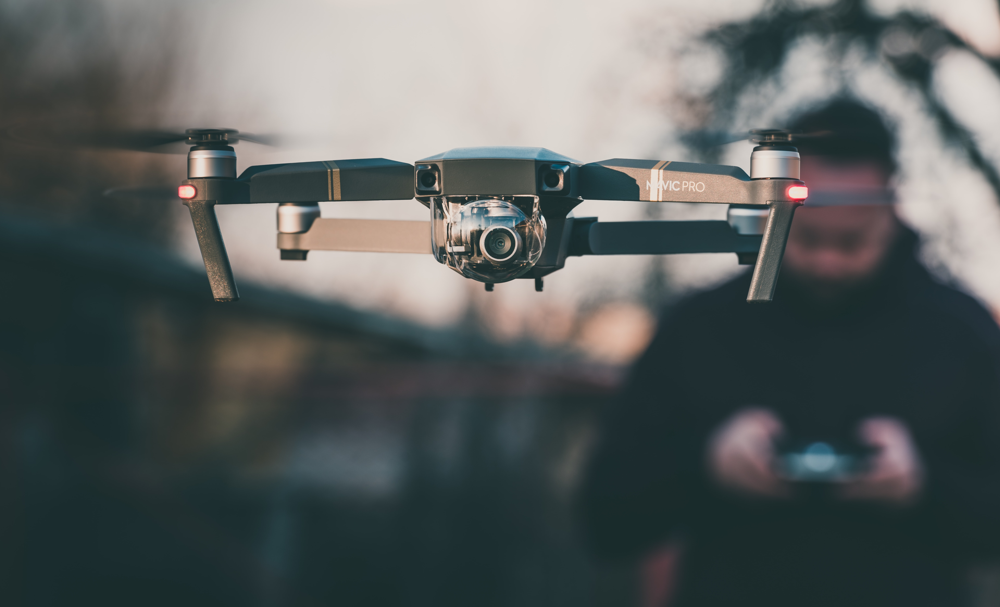

Comunidad de Drones
Comunidad de Drones
En los últimos años, el uso de drones ha crecido exponencialmente en el mundo al llegar a incursionar en áreas de nuestro diario vivir.
Junto con la evolución de los sensores y la carga útil que un dron puede llevar, estas aeronaves optimizan los procesos en actividades como la agricultura, el campo audiovisual, obras civiles, vigilancia y seguridad, sistemas de emergencia, entretenimiento, entre otras aplicaciones donde se generen beneficios de la captura de información aérea.
Por esta razón, más y más personas ven en los drones una muy buena opción de trabajo en la que se pueden generar ingresos, brindando un excelente servicio a la comunidad.
En Colombia puedes trabajar con tu dron legalmente, ya sea como persona natural, propietario de tu dron o varios drones, o puedes empezar tu propia compañía explotadora de uno o más drones y hacer todo como persona jurídica. En ambos casos serás el responsable, legalmente ante la Aerocivil, de las operaciones realizadas con los drones bajo tu nombre.
Una vez tengas claro el servicio que prestarás con tu dron, es indispensable que cumplas con los siguientes requisitos:
En caso de que aparte de ser el propietario o explotador del dron, también seas el piloto, es vital que te capacites adecuadamente como operador del dron en un centro de instrucción aeronáutico autorizado por la Aerocivil.
Una vez se tenga definido el dron con el que se va a trabajar, su operador, y el representante legal ya sea propietario o explotador, el siguiente paso es hacer todos los procesos de registro ante la Aerocivil.
El dron que tienes pensado registrar necesita cumplir con una serie de requisitos técnicos propios de la CLASE B. Tenlos en cuenta antes de efectuar el registro del equipo.
Cuando finalices el proceso de registro como propietario o explotado de drones, tienes la responsabilidad de:
Una vez cuentes con la confirmación por parte de la Aerocivil, de que apareces en las bases de datos de dron, operador y explotador, puedes continuar al ultimo paso para poder efectuar tus vuelos legalmente y poder generar los ingresos que te propones.
Finalmente, toda operación que pienses realizar con tu dron CLASE B, deberá contar con previa autorización de la Aerocivil, a menos que lo vueles dentro de los límites de operación de la CLASE A.
Se requiere entregar la documentación adecuada que describa detalladamente la operación que vas a realizar, con eso la Aerocivil verifica que el vuelo se llevará a cabo de la forma más segura posible. Si necesitas asesoría para solicitar permisos ante la Aerocivil ingresa aquí.
Después de esto, solo cabe esperar la respuesta de la Aerocivil, autorizando el vuelo en caso de que todos los pasos anteriores se hayan efectuado satisfactoriamente, iniciando así tu participación en el mercado de servicios con drones.
Siempre recuerda volar tu dron teniendo en cuenta:
Con esto en mente, tendrás siempre una operación segura, que te permitirá ofrecer un servicio de alta calidad a la comunidad, que se verá reflejado en los ingresos que anhelas obtener usando estas nuevas y confiables herramientas aéreas, mejorando así tu calidad de vida y la de los demás.